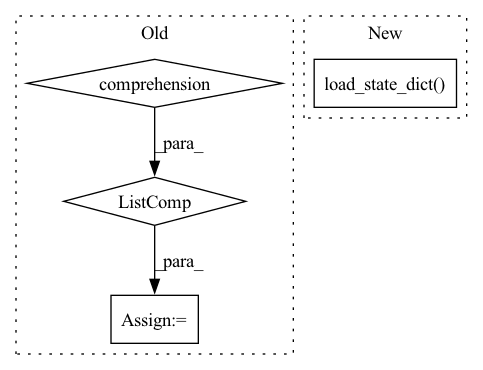

Pattern ID :35359
Before Change
for s, m in new_model.items():
setattr(lmodel, s, m)
//
optimizers_name = [o.__class__.__name__ for o in lmodel.optimizers]
assert len(lmodel.optimizers) == 0 or optimizers_name == mes["optimizers_name"]
for o, osd in zip(lmodel.optimizers, optimizer_state_dict):
o.load_state_dict(osd)
self.global_epoch = mes["last_epoch"]After Change
//
for k, state_dict in models_state_dict.items():
model: Module = getattr(lmodel, k)
model.load_state_dict( state_dict)
def _model_saving(self, core_metric: Optional[float]) -> bool:
best_saving = False
if self.rank not in {-1, 0}:In pattern: SUPERPATTERN
Frequency: 4
Non-data size: 4
Instances Fragment ID: 100474703
Project Name: ustcml/mini-lightning
Commit Name: 646e14e8ccb584d84a069ff239f9bc1cff71a9bc
Time: 2022-12-03
Author: hjt_study@qq.com
File Name: mini_lightning/_mini_lightning.py
M Class Name: Trainer
N Class Name: Trainer
M Method Name: _load_ckpt(3)
N Method Name: _load_ckpt(3)
M Parent Class:
N Parent Class:
M File Name: mini_lightning/_mini_lightning.py
N File Name: mini_lightning/_mini_lightning.py
M Start Line: 582
M End Line: 592
N Start Line: 581
N End Line: 586
Before Change
print("{} model, anchors, and classes loaded.".format(self.model_path))
// 画框设置不同的颜色
hsv_tuples = [(x / len(self.class_names), 1., 1.)
for x in range(len(self.class_names))]
self.colors = list(map(lambda x: colorsys.hsv_to_rgb(*x), hsv_tuples))
self.colors = list(
map(lambda x: (int(x[0] * 255), int(x[1] * 255), int(x[2] * 255)),
self.colors))
After Change
self.net = CenterNet_HourglassNet({"hm": self.num_classes, "wh": 2, "reg":2})
device = torch.device("cuda" if torch.cuda.is_available() else "cpu")
self.net.load_state_dict( torch.load(self.model_path, map_location=device))
self.net = self.net.eval()
print("{} model, and classes loaded.".format(self.model_path))
Fragment ID: 100474712
Project Name: bubbliiiing/centernet-pytorch
Commit Name: d8a34002c4045ca583b43a5f431513f8fd5ac37c
Time: 2021-10-09
Author: 47347516+bubbliiiing@users.noreply.github.com
File Name: centernet.py
M Class Name: CenterNet
N Class Name: CenterNet
M Method Name: generate(1)
N Method Name: generate(1)
M Parent Class: object
N Parent Class: object
M File Name: centernet.py
N File Name: centernet.py
M Start Line: 77
M End Line: 110
N Start Line: 102
N End Line: 114
Before Change
if not maybe_model.exists():
raise AssertionError("checkpoint at {} doesn"t include a model.pth file".format(ckpt_dir))
code_subdirs = [str(x) for x in code_path.iterdir() if x.is_dir()]
sys.path = [str(code_path)] + code_subdirs + sys.path
return torch.load(maybe_model, pickle_module=cloudpickle.pickle, **kwargs) // type: ignore
After Change
trial = cast(PyTorchTrial, trial)
model = trial.build_model()
checkpoint = torch.load(ckpt_dir.joinpath("state_dict.pth"), map_location="cpu") // type: ignore
model.load_state_dict( checkpoint["model_state_dict"])
return model
Fragment ID: 100474705
Project Name: determined-ai/determined
Commit Name: 47ec6cc32234d8e797d9ae3c23d70bfb6d3a64a9
Time: 2020-05-18
Author: sidney@determined.ai
File Name: common/determined_common/experimental/checkpoint/_torch.py
M Class Name: AnonimousClass
N Class Name: AnonimousClass
M Method Name: load_model(2)
N Method Name: load_model(1)
M Parent Class:
N Parent Class:
M File Name: common/determined_common/experimental/checkpoint/_torch.py
N File Name: common/determined_common/experimental/checkpoint/_torch.py
M Start Line: 10
M End Line: 28
N Start Line: 10
N End Line: 22
Before Change
error_type = ex
break
self.local_parameters = model.state_dict()
model_param = [param.data.cpu().numpy() for param in model.state_dict().values()]
results = {"clientId":clientId, "moving_loss": epoch_train_loss,
"trained_size": completed_steps*conf.batch_size, "success": completed_steps > 0}
results["utility"] = math.sqrt(loss_squre)*float(trained_unique_samples)
After Change
logging.info(f"Start to split model (CLIENT: {self.clientId}, MODEL RATE: {self.model_rate}) ...")
self.split_model(model)
self.local_model = resnet18(model_rate=self.model_rate)
self.local_model.load_state_dict( self.local_parameters)
logging.info(f"Start to train (CLIENT: {self.clientId}) ...")
device = conf.device
// self.local_model = model
self.local_model = self.local_model.to(device=device) Fragment ID: 100474707
Project Name: symbioticlab/fedscale
Commit Name: 4bf6ad2cc28ec30db3a6de04e54de28d76e82473
Time: 2022-03-05
Author: yuxuanzh@h1.fl-alg.gaia-pg0.wisc.cloudlab.us
File Name: core/examples/fed_hetero/customized_client.py
M Class Name: Customized_Client
N Class Name: Customized_Client
M Method Name: train(4)
N Method Name: train(4)
M Parent Class: Client
N Parent Class: Client
M File Name: core/examples/fed_hetero/customized_client.py
N File Name: core/examples/fed_hetero/customized_client.py
M Start Line: 97
M End Line: 157
N Start Line: 96
N End Line: 159